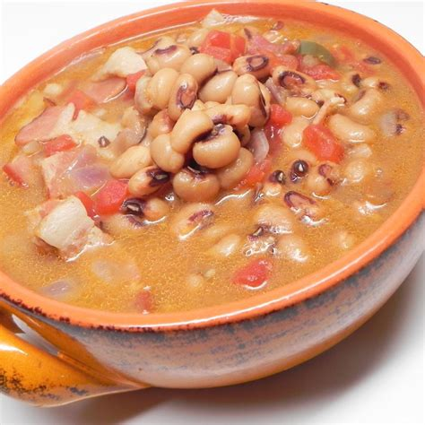

Black-Eyed Pea Soup Recipe

This black-eyed pea soup is a great New Year's meal and perfect on a cold winter night.
Serve this comfort food with a thick slice of bread.
Ingredients
- 1 pound bulk pork sausage
- 1 pound ground beef
- 1 large onion, diced
- 4 cups water
- 3 (15 ounce) cans black-eyed peas, drained
- 1 (28 ounce) can diced tomatoes
- 1 (10 ounce) can diced tomatoes with green chile peppers (such as Rotel), undrained
- 1 (4 ounce) can chopped green chilies
- 4 beef bouillon cubes
- 4 teaspoons molasses
- 1 teaspoon Worcestershire sauce
- 3/4 teaspoon garlic salt
- 1/2 teaspoon salt
- 1/4 teaspoon ground black pepper
- 1/4 teaspoon ground cumin
Steps
- Heat a Dutch oven over medium heat. Cook and stir pork sausage, ground beef, and onion in the hot pot until meat is no longer pink, 10 to 12 minutes; drain off excess fat. Pour in water, then stir in black-eyed peas, diced tomatoes, tomatoes with green chiles, canned green chilies, beef bouillon cubes, molasses, Worcestershire sauce, garlic salt, salt, black pepper, and cumin until thoroughly mixed.
- Bring soup to a boil; reduce heat, cover, and simmer for 45 minutes